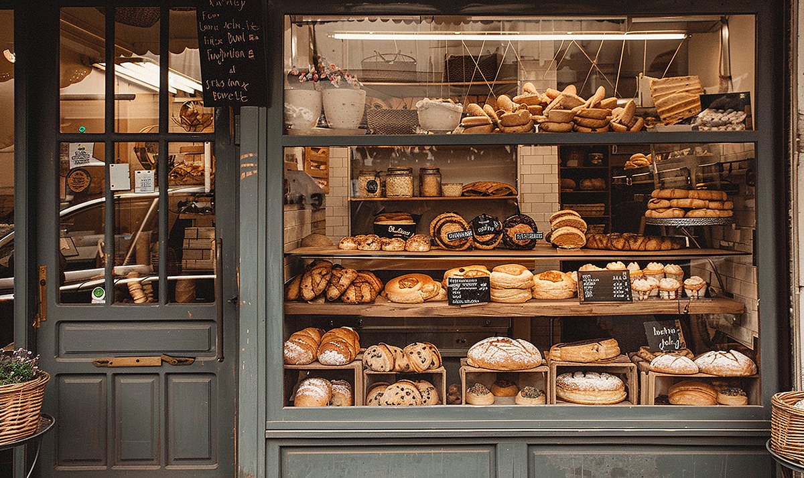
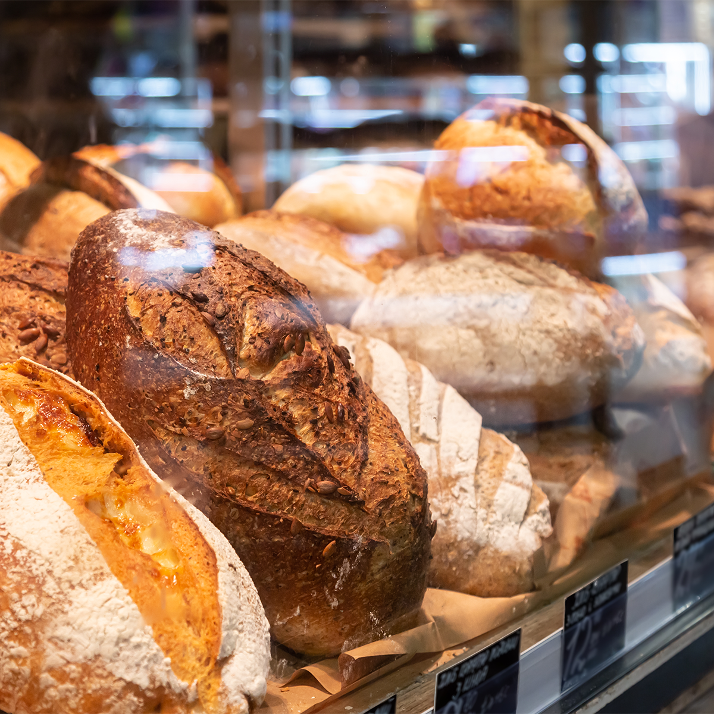
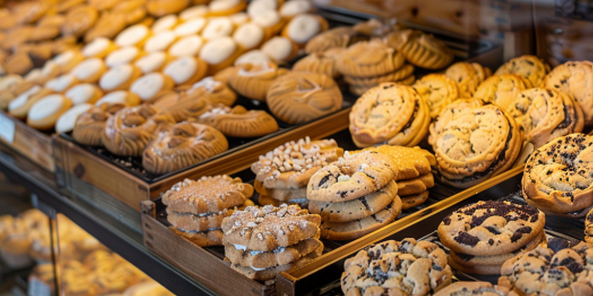

North Star Bakery
Welcome to North Star Bakery
North Star Bakery is a warm neighborhood bakery where handmade breads, pastries, and cakes are prepared with care. We welcome commuters stopping in for breakfast, families picking up a treat, and event planners searching for something special.

What We're Known For
We are known for fresh artisan breads, comforting pastries, and custom cakes made for everyday moments and special celebrations.

Featured Item of the Week

The Neighborhood Treat Box
This week's featured item is a shareable box filled with a rotating selection of cookies and bakery favorites.
Visit Us
Location: 123 North Star Avenue, Yourtown
Hours:
- Monday-Friday: 7:00 a.m.-6:00 p.m.
- Saturday: 8:00 a.m.-4:00 p.m.
- Sunday: 8:00 a.m.-1:00 p.m.